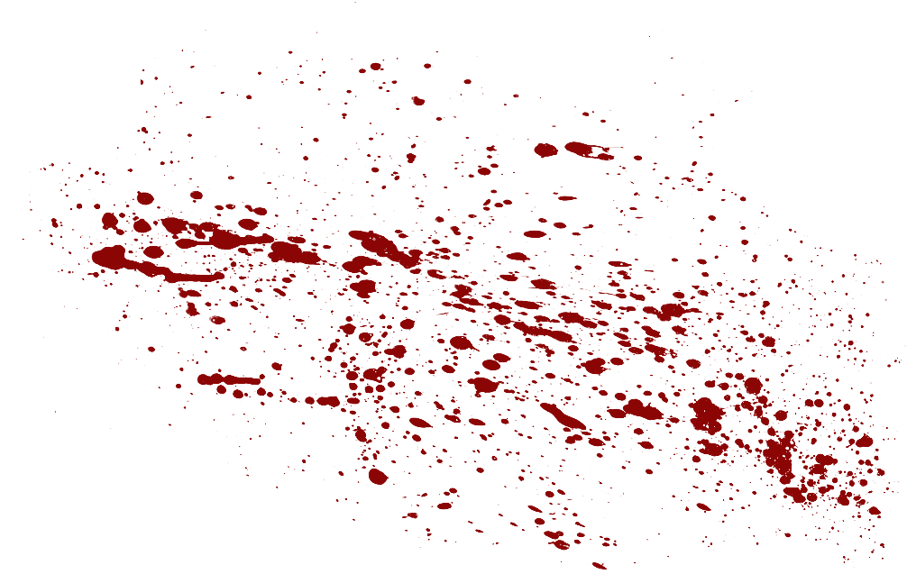

<nav class="cancerslug-nav">
  <div class="navbar-logo">
    <a (click)="toLanding()" routerLink="/cancerslug" routerLinkActive="active"></a>
  </div>
  <button mat-icon-button class="navbar-toggle" (click)="toggleNavbar() ">
    <mat-icon>{{!navbarOpened ? 'menu': 'close'}}</mat-icon>
  </button>
  <!-- <div [@menuAnimation]="navbarOpened ? 'expanded' : 'collapsed'" class="cancerslug-nav__menu ul"
    routerLinkActive="active"> -->
  <div [class.active]="!navbarOpened" class="cancerslug-nav__menu ul active" routerLinkActive="active">
    <a class="home nav-item" routerLink="home">
      <span>Home
        
      </span>
    </a>
    <a class="store nav-item" routerLink="store">
      <span>Store
        
      </span>
    </a>
    <a class="contact nav-item" routerLink="contact">
      <span>Contact
        
      </span>
    </a>
  </div>
</nav>
<!--
  <div class="top-navbar">
    <a class="navbartop-btn" mat-button routerLink="home" routerLinkActive="active"
      (click)="toggleNavbar(); backToTop()">Home</a>
    <a class="navbartop-btn" mat-button routerLink="about" routerLinkActive="active"
      (click)="toggleNavbar(); backToTop()">About</a>
    <a class="navbartop-btn" mat-button routerLink="portfolio" routerLinkActive="active"
      (click)="toggleNavbar(); backToTop()">Portfolio</a>
    <a class="navbartop-btn" mat-button routerLink="contact" routerLinkActive="active"
      (click)="toggleNavbar(); backToTop()">Contact</a>
  </div>
</nav> -->
